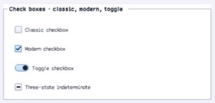

class · visual
CheckBox
CheckBox specializes ButtonBase with validated two/three-state selection, optional automatic cycling, three indicator families, ordered state events, and checkable semantics.
Visual evidence

Ownership and hierarchy
- Hierarchy
- ButtonBase → CheckBox
- Declaration
- include/gui_forms/controls/button_base/check_box/check_box.hpp:15
- Definition
- src/controls/button_base/check_box/check_box.cpp
Public methods
CheckBox
explicit CheckBox(StableId stable_id, std::string text =Constructs an auto-checking unchecked command with classic indicator policy.
check_state
[[nodiscard]] CheckState check_state() const noexceptReturns unchecked, checked, or indeterminate retained state.
set_check_state
void set_check_state(CheckState state)Validates state and three-state policy, commits it, then publishes state and boolean changes in order.
checked
[[nodiscard]] bool checked() const noexceptMaps retained state to true only for the checked value.
set_checked
void set_checked(bool checked)Selects checked or unchecked through the authoritative check-state setter.
three_state
[[nodiscard]] bool three_state() const noexceptReports whether indeterminate is admitted and activation cycles three values.
set_three_state
void set_three_state(bool enabled)Toggles three-state policy and normalizes an existing indeterminate value when disabling it.
auto_check
[[nodiscard]] bool auto_check() const noexceptReports whether activation mutates check state before command publication.
set_auto_check
void set_auto_check(bool enabled)Enables or disables automatic state cycling.
indicator_style
[[nodiscard]] ChoiceIndicatorStyle indicator_style() const noexceptReturns classic box, modern box, or toggle-switch presentation.
set_indicator_style
void set_indicator_style(ChoiceIndicatorStyle style)Validates indicator vocabulary and invalidates size, paint, and semantics.
check_state_changed
[[nodiscard]] Event<CheckState>& check_state_changed() noexceptReturns the event published after the complete CheckState commits.
checked_changed
[[nodiscard]] Event<bool>& checked_changed() noexceptReturns the boolean projection event published when checkedness changes.
on_paint
void on_paint(Painter& painter, Rect local_damage) overrideRecords the selected indicator family, content, focus, and disabled states.
visual_outsets
[[nodiscard]] Insets visual_outsets() const noexcept overrideReports theme material outsets for modern/toggle rendering where applicable.
on_activate
void on_activate() overrideCycles state when auto-checking, stops safely after disposal, then publishes the inherited click.
semantic_descriptor
[[nodiscard]] SemanticDescriptor semantic_descriptor() const overrideProjects checkbox role, check state including mixed, and press/toggle behavior.